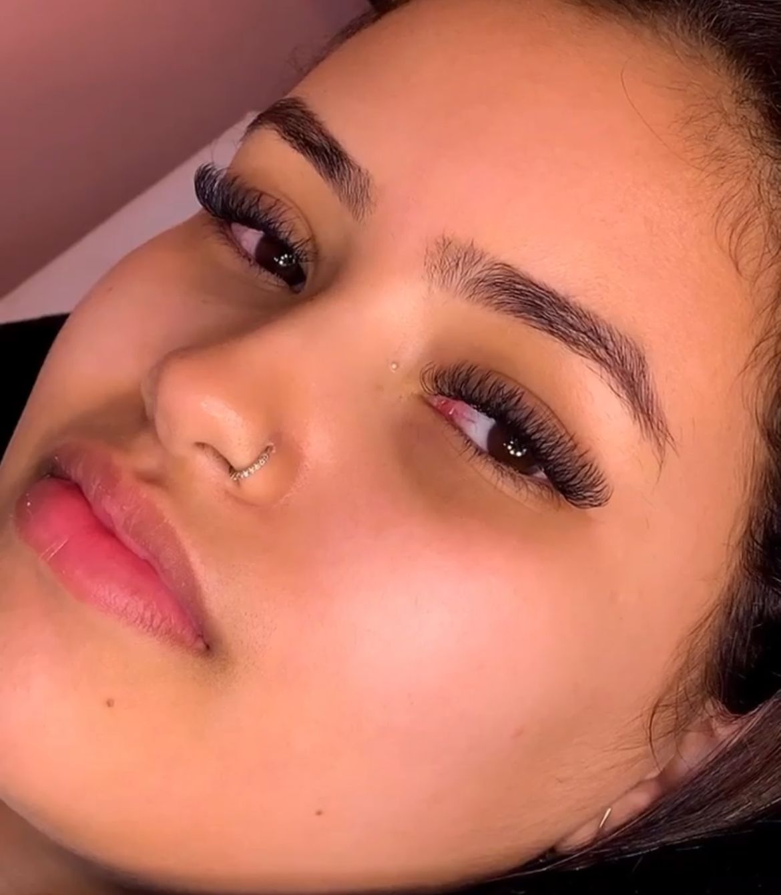
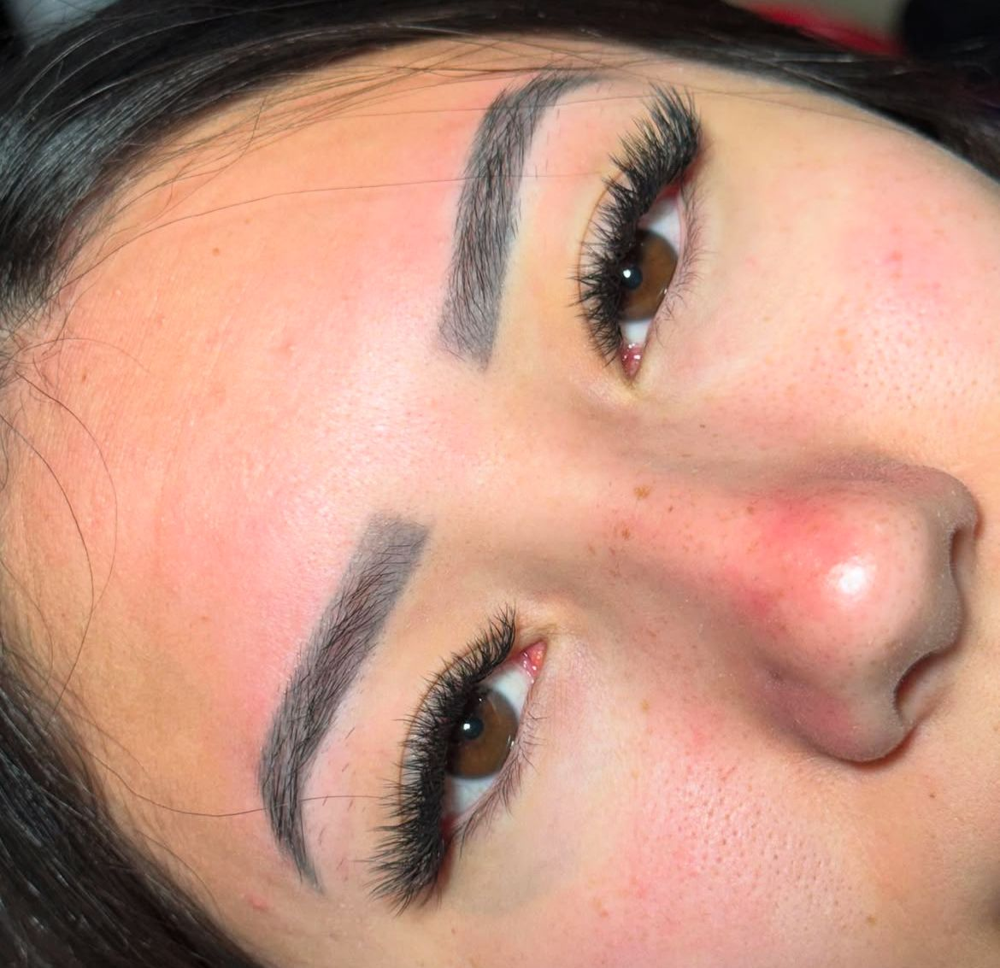
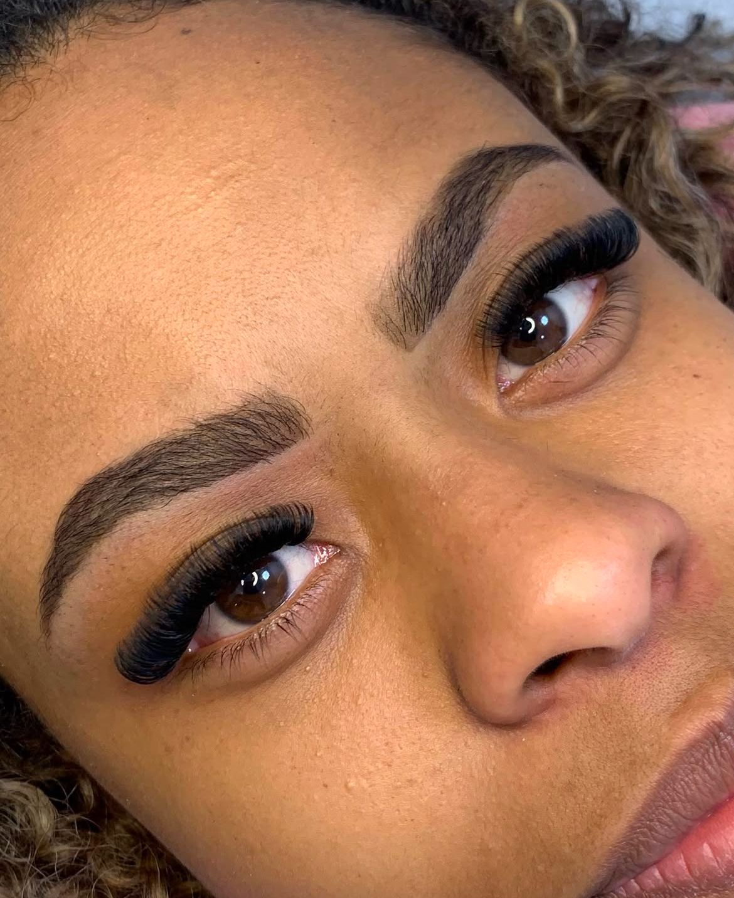
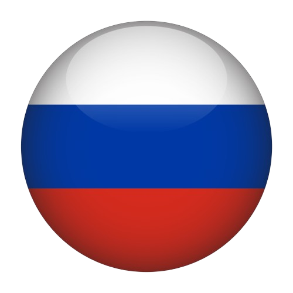
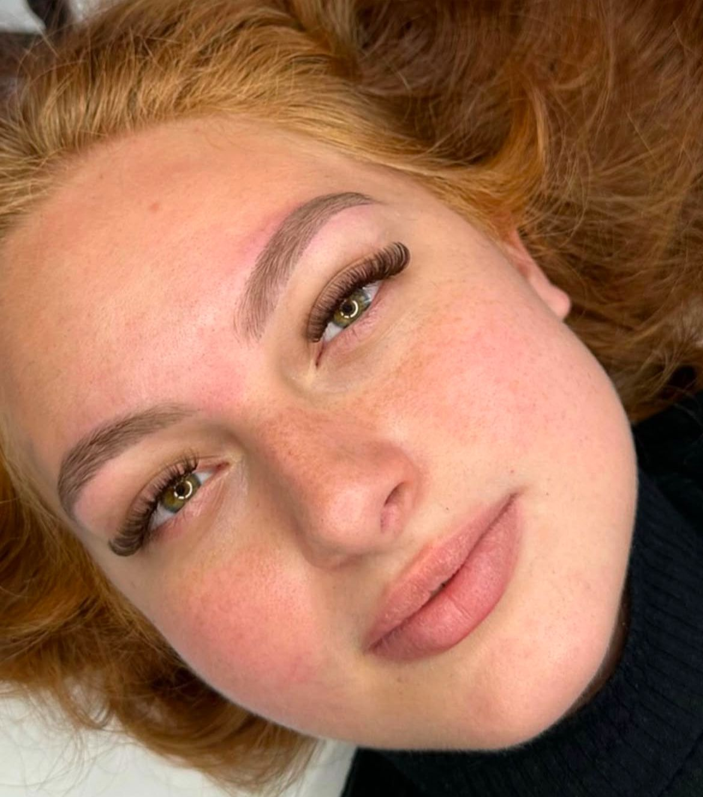
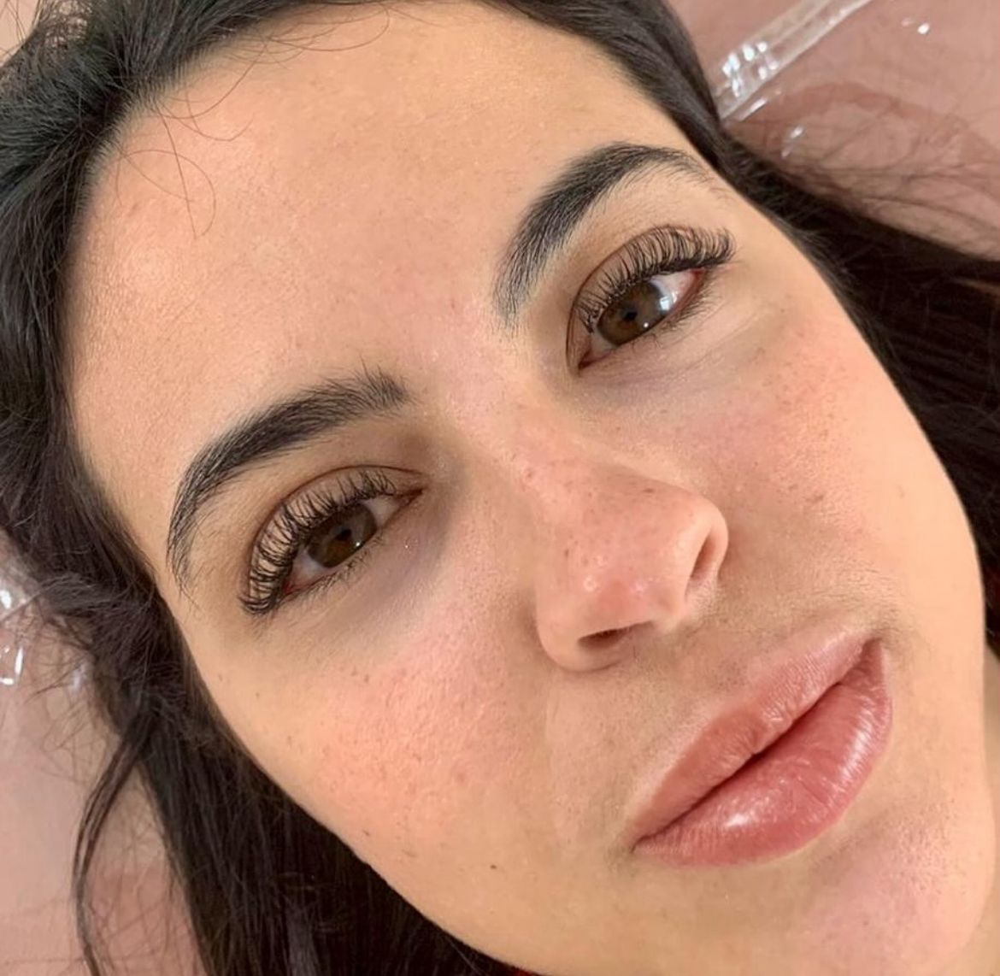

Serviços

Volume Brasileiro
Volume brasileiro, uma técnica mais natural, com mapping gatinho, dando um olhar mais alongado e efeito delineado

mega fox eyes
tem o intuito de “puxar” o olhar e promover um efeito mais alongado e sensual.

Volume Russo 
Essa técnica proporciona um olhar mais marcante, porém sem pesar, pois os fios usados são mais finos do que os tradicionais.

Volume Híbrido
O resultado é um olhar mais natural, porém com um toque de sofisticação e preenchimento, ideal para quem deseja um meio-termo entre leveza e volume.

Volume lash lifting
é um procedimento que curva, alonga e realça os cílios naturais sem a necessidade de extensões.

Fio a Fio
O resultado é mais natural e clean, perfeito para quem quer colocar a extensão de cílios e ficar com a aparência de “nasci assim”